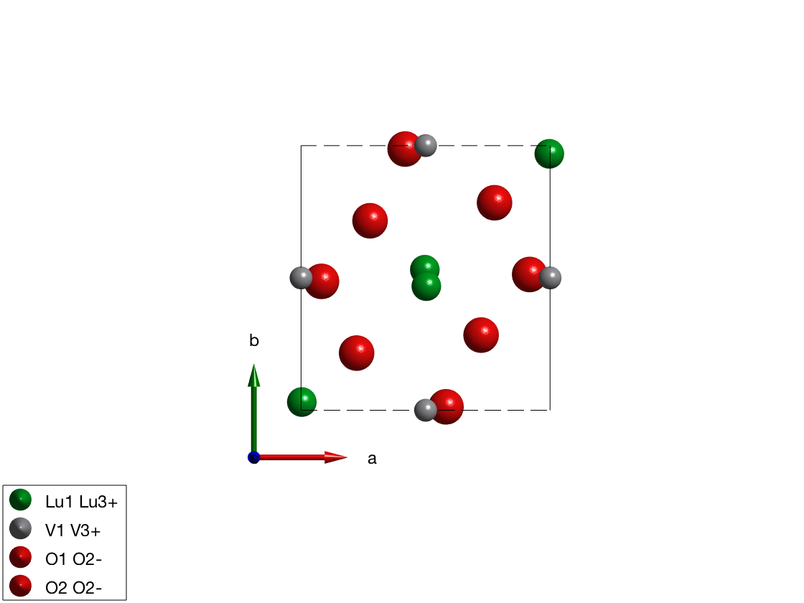
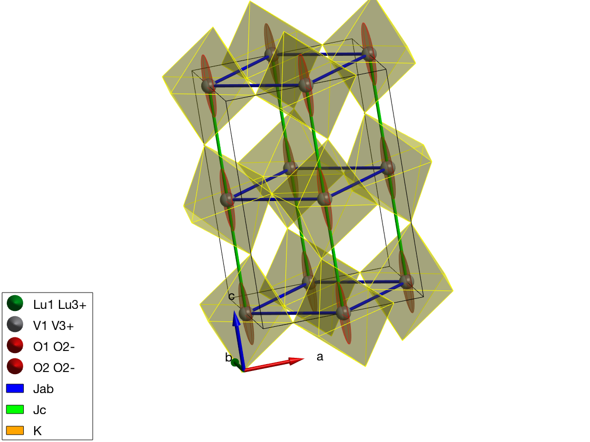
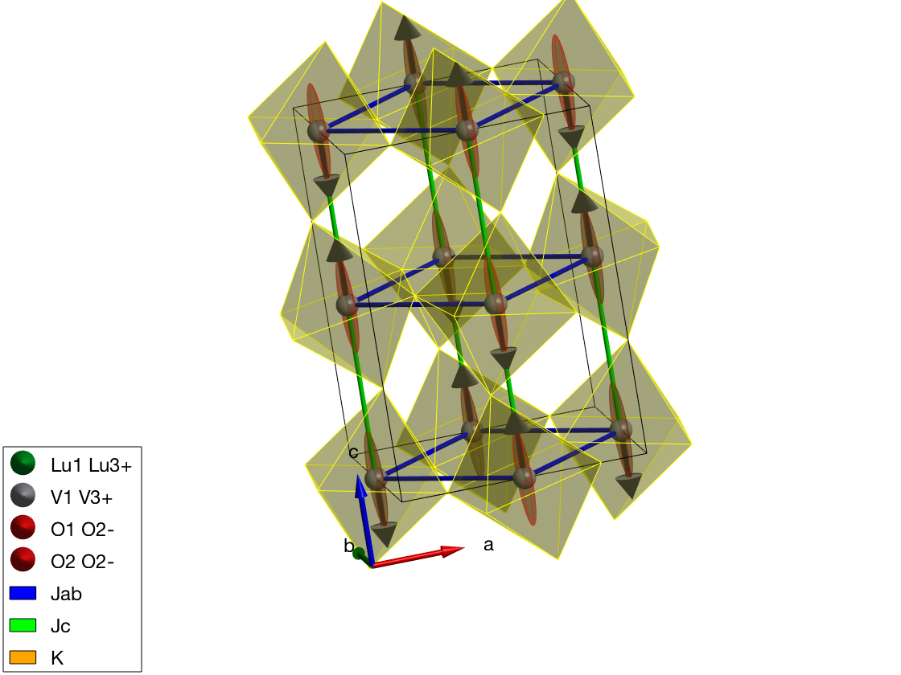
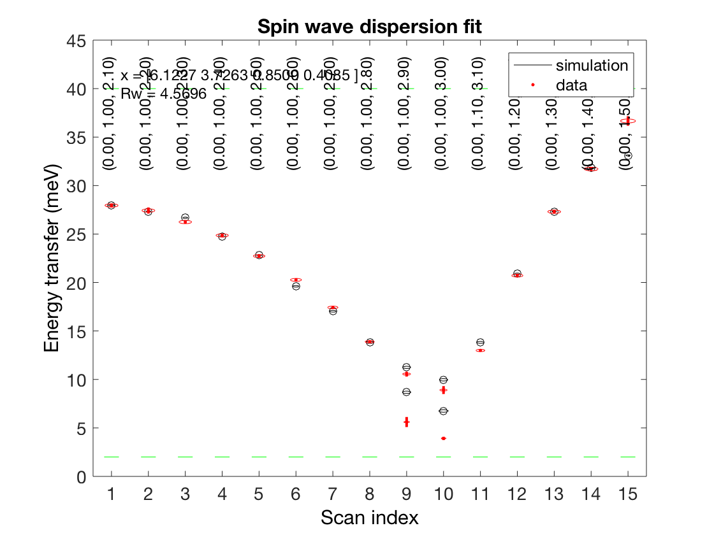
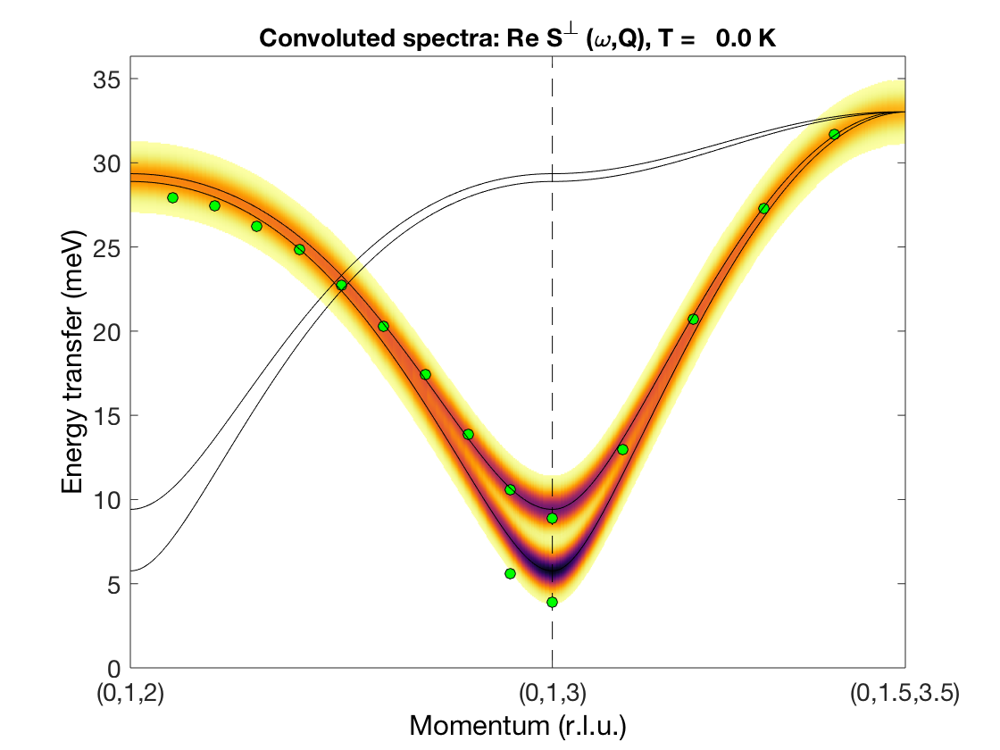

Contents
Crystal structure of LuVO3
We generate crystal structure of LuVO3 including the non-magnetic atoms and using a non-standard space-group setting of Pnma.
luvo = spinw; luvo.genlattice('lat_const',[5.2821 5.6144 7.5283],... 'spgr','x+1/2,-y+1/2,-z; -x,-y,z+1/2; -x,-y,-z','label','P n m a') % Lu atom luvo.addatom('r',[0.003 0.031 1/4],'label','Lu1 Lu3+','color',[0 171 36]) % V atom luvo.addatom('r',[1/2 0 0],'label','V1 V3+','S',1,'color',[166 166 171]) % O(1) atom luvo.addatom('r',[0.082 0.487 1/4],'label','O1 O2-','color',[255 13 13]) % O(2) atom luvo.addatom('r',[0.223 0.216 0.534],'label','O2 O2-','color',[255 13 13]) luvo.plot
Generate Hamiltonian
We generate the spin Hamiltonian.
luvo.gencoupling % Parameters the describe the experimental data in the low T phase. Jab = 4.24; Jc = 5.95; K = diag([0 -0.42 -0.48]); luvo.addmatrix('value',Jab,'label','Jab','color','b') luvo.addmatrix('value',Jc,'label','Jc','color','g') luvo.addmatrix('value',K,'label','K','color','orange') % The assigned the easy plane luvo.addcoupling('mat','Jab','bond',2) luvo.addcoupling('mat','Jc','bond',1) luvo.addaniso('K')
Plot crystal structure with octahedral environment
We plot the VO6 octahedra and rotate the view.
plot(luvo,'chemMode','poly','chemAtom1','V','chemAtom2','O','chemLimit',6,... 'atomMode','mag','chemColor','yellow','ionColor','r','copy',false); R = sw_rotmatd([1 0 -0.2],-80); swplot.transform(R) swplot.translate
Direct input of the magnetic structure
We input directly the antiferromagnetic structure.
luvo.genmagstr('mode','helical','S',[0 0 1]','n',[0 1 0],'k',[0 1 1]); % Overplot the magnetic structure without replotting the crystal swplot.plotmag
Check out matparser that can change the matrices in a spinw object
We will use the spinw.matparser mothod to parameterize the Hamiltonian. These will be out fitting parameters later. After calling matparser, we can check the resulting matrices using the spinw.table method.
x1 = [4.24 5.95 -0.46 -0.48]; luvo.matparser('param',x1,'mat',{'Jab' 'Jc' 'K(2,2)' 'K(3,3)'},'init',true) luvo.table('matrix')
ans =
matrix Mx My Mz type assigned
______ ____________________ ___________________ ___________________ _____________ ________
'Jab' 4.24 0 0 0 4.24 0 0 0 4.24 'Heisenberg' 'bond'
'Jc' 5.95 0 0 0 5.95 0 0 0 5.95 'Heisenberg' 'bond'
'K' 0 0 0 0 -0.46 0 0 0 -0.48 'anisotropic' 'aniso'
Fit experimental spin wave dispersion
We use the spinw.fitspec command to fit experimental data stored in the LuVO3_fitted_modes.txt' file. For details on the file format check sw_readspec, for details on the fitting check spinw.fitspec. To switch of the timer function we use the swpref.setpref command setting tid to 0. The fitspec command similarly to all other commands accept a struct instead of a list of optionname value pairs. We also slightly change the input of spinw.matparser, fitting K(1,1) and K(2,2) and restricting them to positive values. This ensures that the magnetic structure (parallel to c-axis) is always the right ground state. The data file is stored here: https://goo.gl/8guwPF Please save it with the name LuVO3_fitted_modes.txt into a location that is visible to Matlab.
swpref.setpref('tid',0) par_fit = struct; par_fit.datapath = 'LuVO3_fitted_modes.txt'; par_fit.Evect = linspace(0,45,71); par_fit.func = @(obj,p)matparser(obj,'param',p,... 'mat',{'Jab' 'Jc' 'K(1,1)' 'K(2,2)'},'init',true); par_fit.xmin = [ 3 1 0 0 ]; par_fit.xmax = [ 9 10 1 1 ]; par_fit.x0 = [ 6 4 0.1 0.04 ]; par_fit.plot = true; par_fit.hermit = false; par_fit.optimizer = 'pso'; par_fit.maxiter = 10; par_fit.optmem = 1; par_fit.nrun = 3; fitStr = luvo.fitspec(par_fit);
Warning: Convergence is not reached! Warning: Convergence is not reached! Warning: Convergence is not reached!
Check the calculated spin wave spectrum
After fitting, the best result is stored in the spinw object. The data includes 2 straight lines in reciprocal space: (0,1,L) and (0,1+K,3+K). We tile the two scans together onto the same plot using a bit of Matlab coding.
Q1 = [0 1.0 2.0];
Q2 = [0 1.0 3.0];
Q3 = [0 1.5 3.5];
spec = luvo.spinwave({Q1 Q2 Q3 501});
spec = sw_egrid(spec);
figure
sw_plotspec(spec,'dE',1.5)
legend('off')
% Plot over the experimental data after loading the data.
T = sw_readtable('LuVO3_fitted_modes.txt');
% List of Q values from data.
Q = [[T(:).QH];[T(:).QK];[T(:).QL]]';
% List of energy values from data.
w1 = [T(:).EN1];
w2 = [T(:).EN2];
% We remove zero energy points.
w2(w2==0) = nan;
% (0,1,L) line
Qabs = sqrt(sum((bsxfun(@minus,Q(1:10,:),[0 1 2])*luvo.rl).^2,2));
% (0,1+K,3+K) line
Qabs2 = sqrt(sum((bsxfun(@minus,Q(11:end,:),[0 1 3])*luvo.rl).^2,2));
Qabs = [Qabs; Qabs2 + sqrt(sum(([0 0 1]*luvo.rl).^2))];
hold on
plot3(Qabs,w1,1e2+w1*0,'ko','MarkerFaceColor','g')
plot3(Qabs,w2,1e2+w2*0,'ko','MarkerFaceColor','g')
